从文艺复兴时期的艺术家身上我们不难看出，绘画作为空间艺术的代表与几何学有着不可分割的联系，正如古希腊数学家毕达哥拉斯及其弟子们已意识到，代数或算术与时间艺术的代表——音乐有着密切的联系。一个有趣的现象是，直到17世纪后期，欧洲才诞生了第一批伟大的音乐家，如意大利的维瓦尔第（A.Vivaldi，1678—1741）、德国的巴赫（J.S.Bach，1685—1750）和英国的亨德尔（G.F.Handel，德裔，1685—1759），他们比那些绘画或雕塑大师们的出现时间晚得多。同样，在微积分诞生之前，唯有几何学在数学中占据了重要地位，它的核心当然是欧几里得几何。
以往，欧洲的数学家们大多自称为几何学家，无论是欧几里得的名言“在几何学中没有王者之路”，还是立在雅典柏拉图学园门口的牌子“不懂几何学者请勿入内”，似乎都昭示了这一点。甚至帕斯卡尔在《思想录》中也有这样的自谦之词，“凡是几何学家只要有良好的洞见力，就会是敏感的；而敏感的人若能把自己的洞见力运用到几何学原则上去，也会成为几何学家。”
随着笛卡尔坐标系的建立，用代数方法研究几何学的桥梁得以构建，作为附庸物的代数学的面貌也有了改观。可是，那时候代数学的工作重心依然围绕着解方程问题，代数学（与几何学一样）的真正革命性的变革要等到19世纪才会来临。如果说率先有所突破，这个领域就是数论——一个专注于自然数或整数的性质及其相互关系，时常游走于代数的宅前院后的最古老的数学分支。那主要是因为一个隐名埋姓的业余爱好者的兴趣和努力，他便是法国南方城市图卢兹的一个文职官员——皮埃尔·德·费尔马（Pierre de Fermat，1601—1665）。
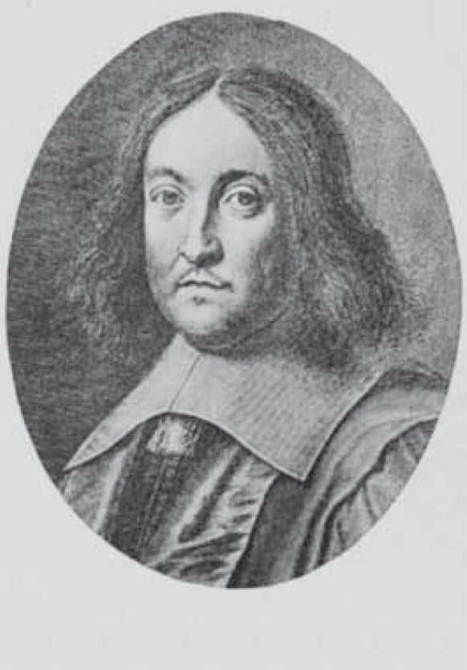
皮埃尔·德·费尔马
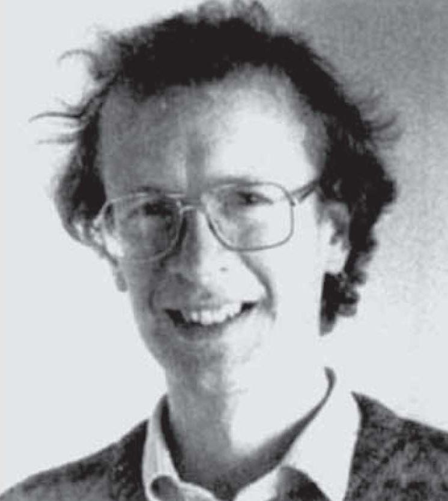
费尔马大定理的证明者怀尔斯
作为一个远离首都巴黎的外省人，费尔马从事的司法事务占据了他白天的时间，而夜晚和假日几乎全被他用来研究数学了。部分原因是那个时候的法国反对法官们参加社交活动，理由是朋友和熟人可能有一天会被法庭传唤，与当地居民过从甚密会导致偏袒。正是由于远离图卢兹的上流社会交际圈，费尔马才得以专心于他的业余爱好。他几乎把每一个夜晚都奉献给了数学，完成了许多极其重要的发现，对数论问题尤为感兴趣，提出了许多命题或猜想，使得后来的数学家们忙碌了好几个世纪。
费尔马所证明的完整结论并不多，其中著名的有：每一个奇素数都可用且仅可用一种方式表示成两个平方数之差；每一个形如4n+1的奇素数，作为整数边长的直角三角形的斜边，仅有一次机会，其平方有两次机会，其立方有三次机会，等等。例如：
52 =32 +42 ，252 =152 +202 =72 +242
1252=752+1002=352+1202=442+1172
更多的时候，费尔马只是给出（以通信或以出竞赛题的方式）定理的结论而不给出证明。例如，整数边长的直角三角形的面积不会是某一个整数的平方数；每一个自然数可表示成4个（或少于4个）平方数之和。值得一提的是，这个结论的推广就是著名的“华林问题”，有关华林问题的研究为我国数学家华罗庚（1910—1985）带来了最初的国际声誉，华罗庚对数学的贡献涉及解析数论、代数学、多复变函数论、数值分析等领域。
费尔马提出的上述两个命题后来均由法国数学家拉格朗日给出证明，瑞士数学家欧拉对费尔马问题花费了更多的精力（这也是我们把这一节内容安排在此的一个原因，欧拉和拉格朗日主要生活在18世纪）。事实上，在欧拉漫长的数学生涯中，他几乎对费尔马思考的每一个数学问题都做了深入细致的研究。例如，费尔马曾猜测，对每一个非负整数n，
Fn =22n +1
均为素数（“费尔马数”）。对于0≤n≤4，费尔马做了验证。欧拉却发现，F5 不是素数，不仅如此，他还找到F5 的一个素因子641。事实上，从那以后，人们再也没有发现新的费尔马数。
又如，1740年费尔马在给友人的信中提出了这样一个整除的命题：如果p是一个素数，a是任一与p互素的整数，则ap–1 –1可被p整除。将近100年以后，欧拉不仅给出了这个命题的证明，而且把它推广到任意正整数的情形，由此他引进了后来被称作欧拉函数的φ （n），即不超过n且与n互素的正整数个数。例如，φ （1）=φ （2）=1，φ （3）=φ （4）=φ （6）=2，φ （5）=4，…欧拉证明了，若a和n互素（没有相同的公因子），那么aφ（n） – 1可被n整除。
上述结果及其推广分别被称为“费尔马小定理”和“欧拉定理”。有意思的是，现代社会所产生的信息安全问题使得公钥加密算法（RSA，1977）成为密码学的强有力工具，欧拉定理在其中发挥了重要作用。不过，对于下列被称为“费尔马大定理”的猜想（1637），欧拉却无能为力。这个定理是这样说的：当n≥3时，方程
xn +yn =zn
无正整数解。当n=2时，它就是毕达哥拉斯定理的数学表达式，有无穷多组正整数解，且可以用一个清晰的公式来表达。n=4的证明是费尔马自己做出的，欧拉只给出了n=3（比n=4难）的证明，且并不完整。
在此后的300多年间，这个问题吸引了无数聪颖智慧的头脑。可是，直到20世纪末，费尔马大定理才由客居美国的英国数学家怀尔斯给出最后的证明，这条消息连同费尔马的肖像一起登上了《纽约时报》的头版头条。事实上，怀尔斯证明的是以两位日本数学家名字命名的谷山—志村猜想的一部分，该猜想揭示了椭圆曲线与模形式之间的关系，前者是具有深刻算术性质的几何对象，后者是来源于分析领域的高度周期性的函数。在通向证明费尔马定理的路途中，还有许多数学家做出了重要贡献。
特别值得一提的是，德国数学家库默尔（E.E.Kummer，1810—1893）建立了理想数理论，由此奠定了代数数论这门新学科的基础，这或许比费尔马大定理更重要。库默尔的岳父是作曲家门德尔松（F.Mendelssohn，1809—1847）的堂兄、数学家狄利克雷的妻舅。有意思的是，费尔马是在古希腊数学家丢番图的著作《算术》一书的拉丁文版本空白处写下他的评注（猜想）的。在这条评注的后面，这位喜欢恶作剧的遁世者又草草地写下一个附加的注中之注，“对此命题我有一个非常美妙的证明，可惜此处的空白太小，写不下来”。
在数论以外，费尔马也做出了许多重要贡献。例如，光学中有所谓的费尔马原理，即在两点之间传播的光线所取路径所需的时间最短，无论这路径是直的还是因为折射变弯。由此可以得出一个推论，即光在真空中以直线传播。在数学方面，费尔马独立于笛卡尔发现了解析几何的基本原理，求曲线的极大值和极小值方法使他被誉为微分学的创始人，他与帕斯卡尔的通信又创立了概率论。两位数学家最初讨论的其实是赌博问题，即有两个技巧相当的赌徒A和B，A若取得2点（局）或2点以上即获胜，而B要取得3点或3点以上才获胜，问双方的胜率各为多少？
费尔马是这样考虑的，他用a表示A取胜，用b表示B取胜，因为最多4局就可分出胜负，故所有可能的情形如下：
aaaa aaab abba bbab
baaa baba abab baba
abaa bbaa aabb abbb
aaba baab bbba bbbb
不难看出，A获胜的概率是
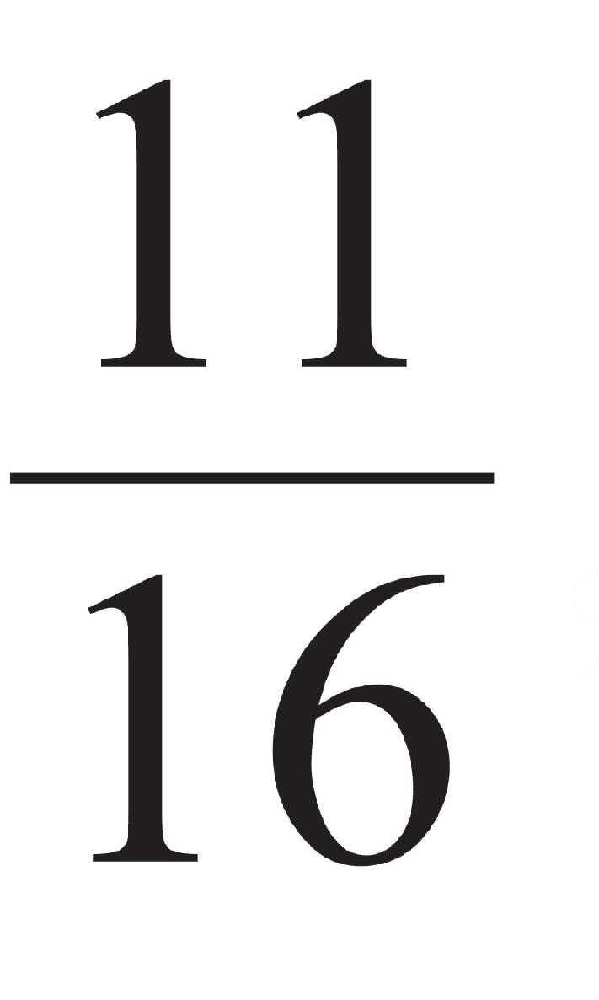
，B获胜的概率为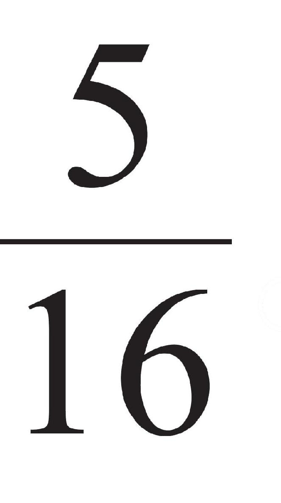
。这里需要提及比概率论稍晚出现的统计学，它主要通过收集数据，利用概率论建立数学模型，进行量化分析、总结，进而做出推断和预测，为相关决策部门提供参考和依据。从物理到社会科学、人文科学，再到工商业和政府决策，都需要统计学，其最主要的应用是在保险业、流行病学、人口普查和民意测验方面。如今，统计学已从数学中独立出来，成为继计算机之后数学派生的又一级学科。
我们在第一章里谈到，统计学的鼻祖是亚里士多德，但那时统计学尚未成为真正的学科。
正如概率论源于赌徒问题，统计学起源于对死亡率的分析。1666年的伦敦大火既烧毁了圣保罗大教堂等建筑，也消灭了万恶的鼠疫。服装店老板格朗特（J.Graunt，1620—1674）失了业，在此前后他热衷于研究130年以来伦敦的死亡记录，他通过两个生存率（6岁和76岁）预测出随后各年活到其他年纪的人数比例及其预期寿命。1693年，英国天文学家哈雷（E.Halley，1656—1742）也对德国布雷斯劳（现为波兰弗罗茨瓦夫）的死亡率进行了统计研究。
最后，我们回到费尔马大定理，它曾被比喻成“一只会下金蛋的鸡”。当怀尔斯宣布攻克此定理时，数学界欢呼之余又有不少人叹息，担心日后再也没有推动数论发展的问题了。可是没过几年，便有“abc猜想”显露出重要性，这是与整数的两大运算——加法和乘法相关的一个不等式。设n为自然数，它的根是其所有不同素因子的乘积，记为rad （n）。例如，rad （12）=6。1985年，法国数学家奥斯达利（M.Oe s t er lé，1954—）和英国数学家马瑟（D.Masser，1948—）提出了abc猜想，其弱形式为：对满足a+b=c，（a,b）=1的任意正整数a、b、c，恒有
c≤{rad （abc）}2
abc猜想或其弱形式问题的解决可推动数论中一批重要问题的解决，同时，一些著名的定理和猜想也可以轻松得到证明，后者囊括了费尔马大定理等4项菲尔兹奖成果。以费尔马大定理为例：反设对某个n≥3，存在正整数x、y、z，使得xn +yn =zn ，取a=xn ，b=yn ，c=zn ，由abc弱形式可知，zn <[rad （xyz）n ]2 <（xyz）2 <Z6 。因此，n=3、4或5，这三种情形可通过初等的方法予以排除。
对在科学领域走在前列的西欧诸国来说，从17世纪到18世纪的过渡相对平稳。倒是欧洲的北部出现了一些变化，1700年，彼得大帝采用儒略，以1月1日为岁首，同时开始了以军事为中心的各项改革。夏天，与土耳其缔结30年休战协定后才过了一个星期，俄国便伙同波兰、丹麦对瑞典发动了著名的“北方大战”。不过，爱好数学、绘画和建筑的瑞典国王查理十二世当年率兵直抵哥本哈根，迫使丹麦退出战争。在德国，柏林科学院成立，莱布尼茨出任首任院长。
由于处于太平盛世，微积分在建立不久后就得到了进一步发展，获得了十分广泛的应用，产生了许多新的数学分支，从而形成了“分析”这样一个在观念和方法上都具有鲜明特点的新领域。在数学史上，18世纪被称为“分析的时代”，也是向现代数学过渡的重要时期。有意思的是，正如分析综合了几何和代数，在艺术领域，也有空间艺术和时间艺术之外的所谓综合艺术，它的代表是戏剧（还有电影）。戏剧既有绘画或雕塑那样的空间展示，又有音乐或诗歌那样的时间延续。在文艺复兴之后，欧洲的戏剧得到了飞速发展。
对法国来说，17世纪是戏剧的黄金时代，伟大的戏剧家高乃依（P.Corneille，1606—1684）、莫里哀（Molière，1622—1673）和拉辛（Jean Racine，1639—1699）都生活在这个世纪。正如意大利文艺复兴时期的戏剧影响了英国伊丽莎白时代的戏剧（莎士比亚是其中最杰出的代表，他的许多作品如《威尼斯商人》《罗密欧与朱丽叶》《暴风雨》等中的故事均发生在亚平宁半岛），法国的现代戏剧无疑受到西班牙戏剧的熏陶，其发轫之作、高乃依的《熙德》的主人公熙德就是一位西班牙民族英雄。到了18世纪，德国戏剧异军突起，出现了莱辛（G.E.Lessing，1729—1781）、歌德（J.Goethe，1749—1832）和席勒（F.Schiller，1759—1805）等戏剧大师。
魏玛的东正教堂，旁边的公爵墓园地下室里并排安放着歌德和席勒的灵柩。作者摄
回到微积分的发展，在牛顿和莱布尼茨的原始工作中已经蕴含了某些新学科的萌芽，这为18世纪的数学家们留下了许多可做的事情。但在实现这些发展之前，必须完善和扩展微积分本身，首要的便是对初等函数的充分认识。以对数函数为例，它起源于几何级数和算术级数的项与项之间的关系,而现在却成了有理函数
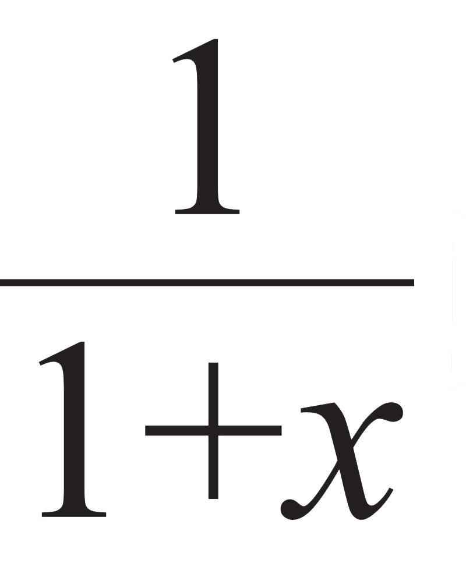
的积分函数；与此同时，对数函数又是性质相对简单的指数函数的反函数。在牛顿之后，英国的数学家主要是在函数的幂级数展开式研究方面取得了一些成绩，其中泰勒（B.Taylor，1685—1731）得出了今天被称为“泰勒公式”的重要结果：
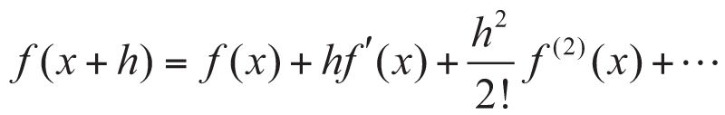
这个公式使得任意函数展开成幂级数成为可能，因此它是微积分进一步发展的有力武器，后来的法国数学家拉格朗日甚至称其为微分学基本原理。
可是，泰勒对该公式的证明并不严谨，他没有考虑到级数的收敛性或发散性。不过这一点似乎可以原谅，如果考虑到他还是一位很有才能的画家，在《直线透视》（1715）等著作中论述了透视的基本原理，最早解释了“没影点”的数学原理。众所周知，泰勒级数中x=0的特殊情形也叫“马克劳林级数”。有意思的是，马克劳林（C.Maclaurin，1698—1746）不仅比泰勒年轻13岁，他得到这个公式也比泰勒晚，却能以他的名字命名，实在是幸运。
究其原因，这一方面是由于泰勒生前并不出名，另一方面是由于马克劳林的早慧，他是牛顿“流数术”的忠实拥趸，21岁就成为英国皇家学会会员。可是，在泰勒和马克劳林去世之后，英国数学却陷入了长期的低迷状态。微积分的发明权之争滋长了英国数学家的民族狭隘意识和保守心态，导致他们长期无法摆脱牛顿学说中的弱点的束缚。与此形成对照的是，欧洲大陆的同行们却在莱布尼茨数学思想的滋养下取得了丰硕的成果。
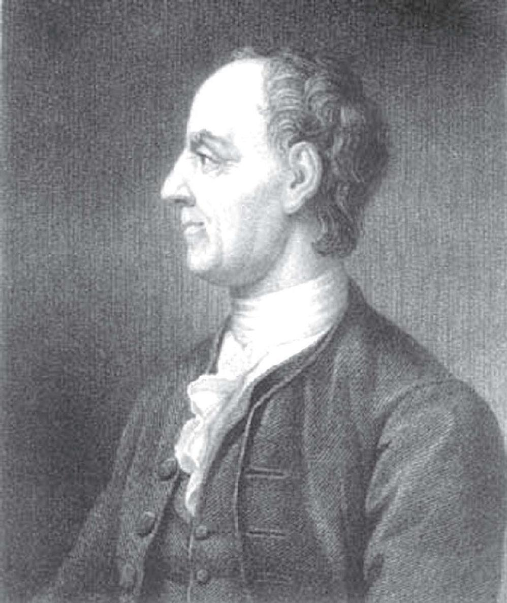
18世纪最伟大的数学家之一欧拉
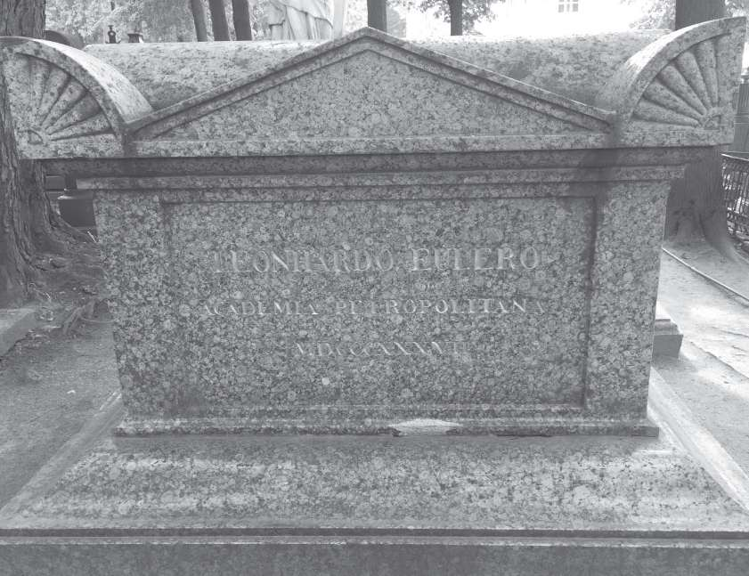
欧拉之墓。作者摄于圣彼得堡
仅以欧洲中部的瑞士为例。在18世纪，这个地处内陆的高山小国出现了几位重要的数学家。约翰·伯努利首先将函数概念公式化，同时引进了变量代换、部分分式展开等积分技巧。他在巴塞尔大学的学生欧拉（L.Euler，1707—1783）堪称那个世纪最伟大的数学家，他对微积分的各个部分都做了精细的研究。欧拉把函数定义为由一个变量与一些常量通过某种形式形成的解析表达式，由此概括了多项式、幂级数、指数、对数、三角函数，乃至多元函数。欧拉还把函数的代数运算分成两类，即包含四则运算的有理运算和包含开方根的无理运算。
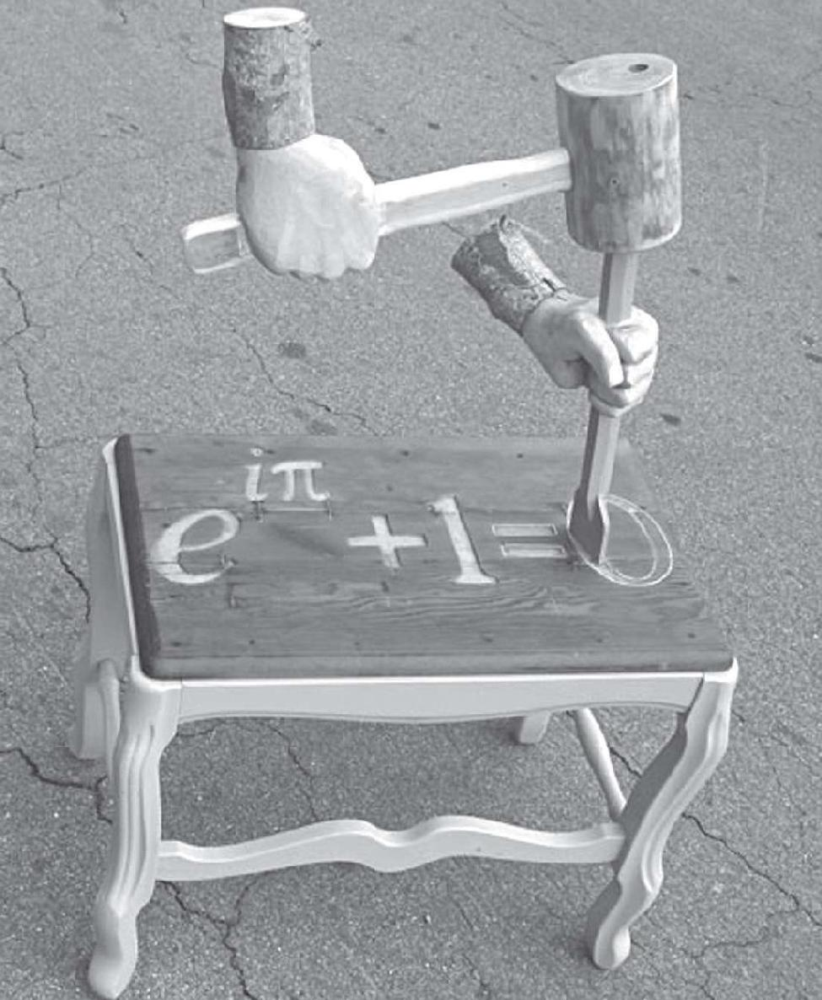
含有5个最常用符号的欧拉公式
对于x>0，欧拉把对数函数定义为下列极限
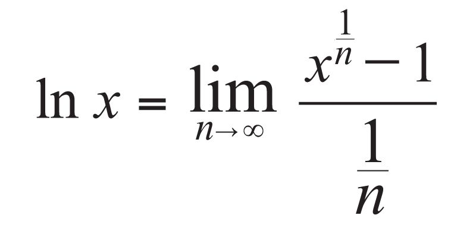
同时给出的还有指数函数的极限，设x为任意实数，则
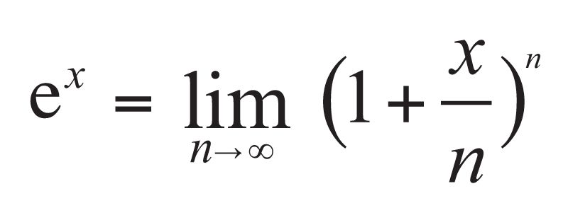
这里e是欧拉姓氏的第一个字母。此外，欧拉还区分了显函数与隐函数，单值函数与多值函数，定义了连续函数（与今天的解析函数等同）、超越函数和代数函数，考虑了函数的幂级数展开式，断定任何函数都可以展开（显然这不完全正确）。欧拉是一个高产的数学家（生活上也是儿女成群），他还涉足物理学、天文学、建筑学和航海学等诸多领域。欧拉有句名言：凡是我们头脑能够理解的，彼此都是相互关联的。
在微积分学自身不断发展、严格、完善和向多元演变，以及函数概念深化的同时，它又被迅速而广泛地应用到其他领域，形成了一些新的数学分支。这其中的一个显著现象是，数学与力学的关系比以往任何时候都要密切，那个时期的西方数学家大多也是力学家（20世纪的中国有许多高校曾设置数学力学系），正如古代东方有许多数学家也是天文学家。这些新兴的数学分支有常微分方程、偏微分方程、变分法、微分几何和代数方程论等。除此以外，微积分的影响还超出数学范畴进入自然科学领域，甚至渗透到人文和社会科学领域。
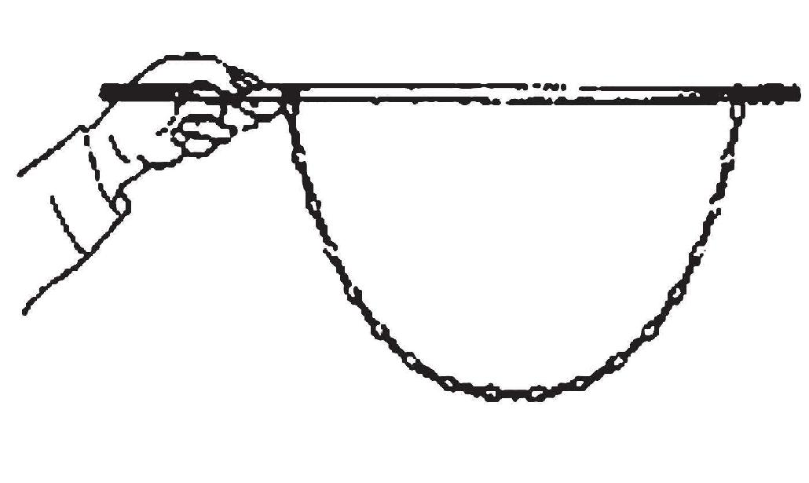
伯努利的悬链线
常微分方程是伴随着微积分的成长而发展起来的，17世纪末以来，摆线运动规律、弹性理论以及天体力学等领域的实际问题引申出一系列含有微分函数的方程，并以挑战者的姿态出现在数学家面前。最有名的是悬链线问题，即求一根两端固定自然下垂的柔软但不能延长的绳子的曲线方程。这个问题是由约翰·伯努利的哥哥雅各布提出，由莱布尼茨命名的，约翰建立的悬链线方程为
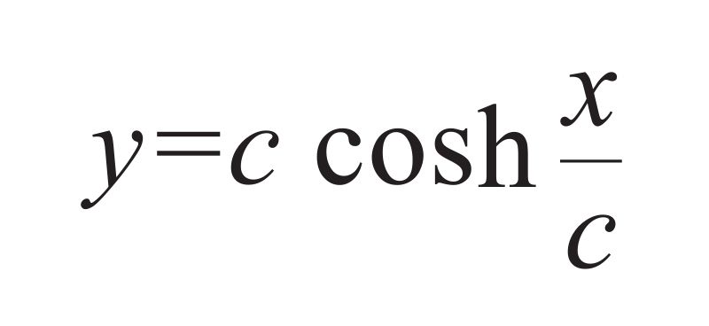
c其中c取决于单位绳长的重量，cosh是双曲余弦函数。常微分方程则经历了从一阶方程到高阶常系数方程，再到高阶变系数方程的过程，最后由欧拉和拉格朗日两位大数学家加以完善，欧拉还率先明确区分了方程的“特解”和“通解”。
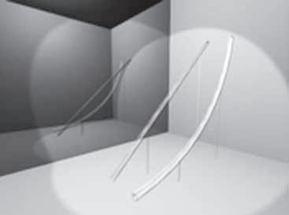
两点间的最速降线并非直线
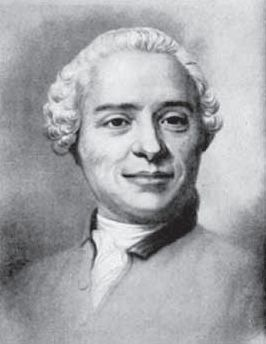
偏微分方程的先驱达朗贝尔，也是一位启蒙主义思想家
偏微分方程出现得要晚一些，1747年才由法国数学家、启蒙运动的先驱人物——达朗贝尔（d’Alembert，1717—1783）首先研究。他发表了一篇有关弦振动形成的曲线问题的研究论文，其中包含了偏微分方程的概念。达朗贝尔是一个弃婴，被一位玻璃匠收养，几乎完全靠自学成才。后来，欧拉在初始值为正弦级数的条件下给出了包含正弦和余弦级数的特解，他（受乐器引发的音乐美学问题启发）和拉格朗日还研究了由鼓膜振动和声音传播产生的波动方程。另一位对偏微分方程做出重要贡献的是法国数学家拉普拉斯，他建立了所谓的拉普拉斯方程，即
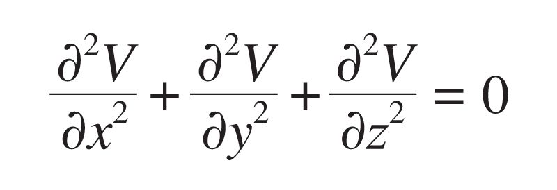
其中V是位势函数，因而拉普拉斯方程又叫位势方程。位势理论解决了热门的力学问题——两个物体之间的引力，如果物体质量相对于距离可以忽略不计，V的偏导数就是两个质点的引力分量，可由牛顿的万有引力公式给出。
相比之下，变分法的诞生更富戏剧性，虽然这个译名听起来不像一个分支学科，它的原意是“变量的微积分”。变分法的应用范围极广，从肥皂泡到相对论，从测地线到极小曲面，再到等周问题（极大面积），但它最初源于一个简单的问题：最速降线。它是指求出既不在同一平面也不在同一垂线上的两点之间的曲线，使一个质点仅在重力作用之下最快速地从一点滑到另一点。这个问题经约翰·伯努利公开征解以后，吸引了全欧洲的大数学家，包括牛顿、莱布尼茨和约翰的哥哥雅各布都参与其中，最后归结为求一类特殊函数的极值问题。值得一提的是，牛顿以匿名形式投稿，但被约翰识破，“从爪子判断，这是一头狮子”。
在众多数学家的共同努力下，通过以上诸数学分支的建立，加上微积分学这个主体，形成了被称为“分析”的数学领域。分析与代数、几何并列成为近代数学的三大学科，其热门程度后来居上。事实上，在今天大学数学系的基础课程中，数学分析比高等代数或解析几何的分量更重。与此同时，微积分也被应用于几何和代数研究，最先取得成功的便是微分几何。不过在18世纪，仅限于研究一个点附近区域的几何性质，即局部的微分几何（若讨论曲面的有限部分或全部则属于整体微分几何），我们将在下文详细讨论。
微积分的诞生，以及它与其他自然科学发生的联系，激发了勤于思考者的热情，他们对数学方法在物理学和一些规范科学中应用的合理性和确定性非常信任，并努力尝试把这种信任扩大到整个知识领域。笛卡尔认为一切问题都可以归结为数学问题，数学问题可以归结为代数问题，代数问题又可以归结为解方程问题。可以说，他把数学推理方法看成唯一可靠的方法，并试图在这个毋庸置疑的基础上重建知识体系。
即使与笛卡尔宏大的目标相比，莱布尼茨的野心一点儿也不显小，他尝试创造一种包罗万象的微积分和普遍的技术性语言，使得人类的一切问题都能迎刃而解。在莱布尼茨的计划中，数学不仅是中心，而且是起点。他甚至提出，要把人的思维分成若干个基本的、有区别的、互不重叠的部分，就像24那样的合数可以分成素数因子2和3的乘积。虽然莱布尼茨的计划难以实现，但在19世纪后半期和20世纪发展起来的逻辑学便是基于他提出的“通用语言”符号系统，他也因此被称为“数理逻辑之父”。
相比之下，微积分的建立在宗教方面的影响更为直接和明显，后者在人们的精神和世俗生活中扮演了重要的角色。牛顿虽然赋予上帝创造世界之功，但却限制了上帝在日常生活中的作用。莱布尼茨进一步贬低了上帝的影响力，他虽然也承认上帝的创世之功，但却认为上帝是按照既定的数学秩序进行的。与此同时，由于理性的地位提高，人们对上帝的信仰不再那么虔诚，尽管这并非数学家和科学家们的本意。正如柏拉图相信上帝是一位几何学家，牛顿也认为上帝是一位优秀的数学家和物理学家。
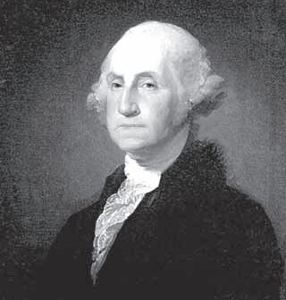
土地测量员出身的乔治·华盛顿
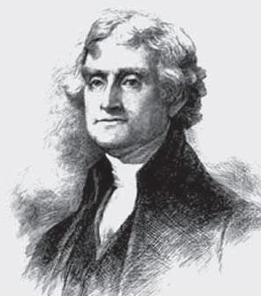
《独立宣言》的起草者托马斯·杰斐逊
到了18世纪，随着微积分学的发展，情况又有了变化。法国启蒙运动的先驱和精神领袖伏尔泰（Voltaire，1694—1778）是牛顿数学和物理学的忠实信徒，也是新兴的自然神论的主要倡导者。自然神论主张把理性和自然等同起来，这在当时受过教育的人中颇为流行。在美国，它的推崇者有托马斯·杰斐逊和本杰明·富兰克林，前者在鼓励传播高等数学方面做了不少工作。事实上，包括乔治·华盛顿在内的前7任美国总统没有一个人表示自己信仰基督教。对于自然神论的信徒来说，自然就是上帝，牛顿的《自然哲学的数学原理》就是“圣经”。有了哲学和神学的保驾护航，微积分在经济学、法学、文学、美学等方面也影响深远。
前文已经提到，在微积分学的发展和应用方面，伯努利家族的成员和他们的瑞士同胞欧拉做出了卓越的贡献。现在，我们就来介绍这个世界上最著名的数学世家，他们似乎注定是为微积分来到这个世界的。这个家族原先居住在比利时的安特卫普，信仰新教之一的胡格诺派，这个教派与加尔文派和清教徒等一样，受过天主教会和王权的迫害。1583年，伯努利家族不得不逃离故乡，他们先是在德国的法兰克福避难，接着迁居瑞士，在巴塞尔安顿下来，并与当地的一个望族联姻，成为很有实力的药材商人。
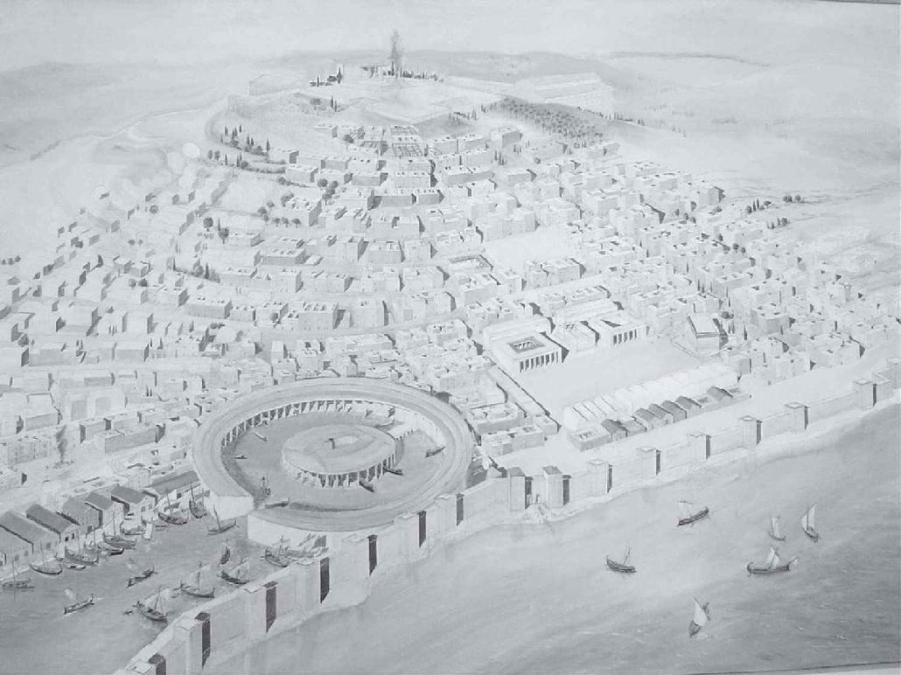
迦太基古城图。作者摄于突尼斯
一个多世纪以后，这个家族出现了第一位数学家——雅各布·伯努利（Jocob Bernoulli，1654—1705），他通过自学掌握了莱布尼茨的微积分，后来一直担任巴塞尔大学的数学教授。最初，雅各布学习的是神学，后来不顾父亲的反对潜心研究数学，并拒绝了教会的任命。1690年，他首先使用了“积分”（integral）这个词。次年他研究了悬链线问题，并将其应用于桥梁设计。他的其他重要的研究成果包括：排列组合理论、概率论中的大数定律、导出指数级数的伯努利数以及变分法原理。
根据希腊传说，迦太基的建国者狄多女王有一次得到一张水牛皮，她命人把它切成一条一条的，连接起来圈出一块最大面积的半圆形土地，这可能就是变分法的起源。这个故事的另一个版本是：地中海塞浦路斯岛的狄多女王的丈夫被她的弟弟皮格马利翁杀死后，她逃亡到非洲海岸，从当地一位酋长手中购买了一块土地，在那里建起了迦太基城。土地购买协议是这样签订的：一个人在一天内犁出的沟能圈起多大的面积，这个城就可以建多大。姐弟二人各自的爱情故事曲折动人，被罗马诗人维吉尔（Vergilius，公元前70—前19）和奥维德（Ovidius，公元前43—18）先后写进他们的诗歌中。
伯努利数Bn在数论中有着不可替代的作用，它的定义可由下列递归公式给出：
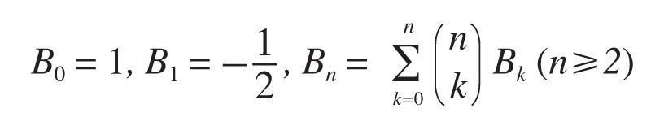
其中
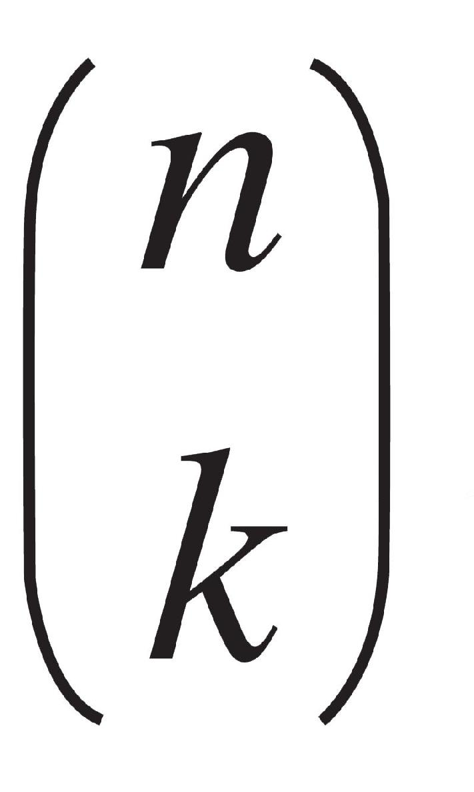
为二项式系数。显而易见，伯努利数永远是有理数，它的性质奇妙无比。不难证明，当n≥3时，奇数项伯努利数Bn =0，而当p是奇素数时，Bp–3 的性质直接决定了费尔马大定理在指数为p时成立与否。由伯努利数还可以给出伯努利多项式，它在数论和函数论中起着重要的作用。雅各布死后，他的墓碑上刻着一条对数螺线和“纵使变化，依然故我”的铭文。与雅各布比起来，小他10多岁的弟弟约翰·伯努利（Johann Bernoulli，1667—1748）的数学贡献毫不逊色（前文已提及）。起初，约翰学的是医学，并在巴塞尔以一篇肌肉收缩的论文获得博士学位。后来，他不顾父亲的反对随兄长学习数学，然后到荷兰的格罗宁根大学做了数学教授，直到雅各布去世才返回故乡。约翰最为人熟知的数学发现是，他给出了求一个分子和分母均趋于零的分式极限的方法（通常为学习微积分学的学生所喜爱）：
若当x→a时，函数f（x）和F（x）都趋于零，在点a的某邻域内（点a本身可以除外），f'（x）和F'（x）都存在，且F'（x）≠0，
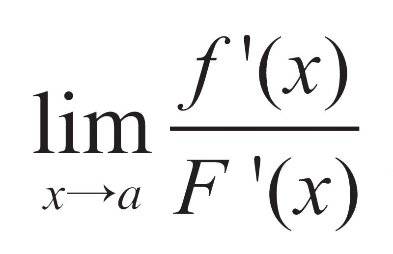
存在（有限或无穷），则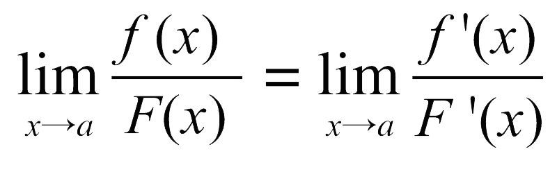
。由于约翰的这个方法被他的法国学生洛必达（1661—1704）收编在一本书里，以至于被误称为洛必达法则。除此以外，约翰还用微积分计算出最速降线、等时线等曲线的长度和面积。
约翰虽然在学术上与雅各布互为竞争对手（他们都是莱布尼茨的好友），而且脾气不好、嫉妒心强，但他却是一位出色的教师，不仅有洛必达这样的学生，还把三个儿子都培养成数学家。约翰的大儿子尼古拉（Nikolaus Bernoulli，1695—1726）和二儿子丹尼尔（分别做过法学教授和医生）双双被聘请到彼得堡科学院，正是这兄弟俩把他们的好朋友欧拉引荐到俄国，让后者在那里度过了他一生中最美好的时光。约翰的小儿子小约翰在做了几年修辞学教授后继任了父亲数学教授的职位。这样的传承还没有结束，因为小约翰的两个儿子——小小约翰和小雅各布也在从事了一段其他职业之后投入数学的怀抱。
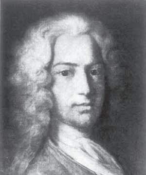
伯努利家族的第二代：丹尼尔
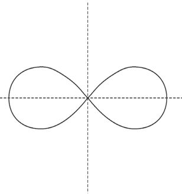
伯努利双纽线
在伯努利家族的第二和第三代数学家中，并非个个都像第一代那样出色。但是，丹尼尔（Daniel Bernoulli，1700—1782）却是一个例外，他是伟大的欧拉的竞争对手。与欧拉几乎一样，丹尼尔曾10次赢得法兰西科学院的奖金（有时和欧拉一同分享）。从彼得堡返回巴塞尔以后，他先后担任解剖学、植物学和物理学教授，却在包括微积分学、微分方程、概率论在内的诸多数学领域也做出了许多贡献。为纪念伯努利家族对数学所做的贡献，20世纪90年代，荷兰创办了《伯努利》杂志，它是继《斐波那契季刊》之后又一份以数学家（族）的名字命名的期刊。
最后，我们要谈到气体或液体动力学的一个伯努利定理，它直接启发了现代飞机的设计师。这个定理说的是，运动流体（气体或液体）的总机械能（包括与流体压强有关的能量、落差的重力势能以及流体运动动能的总能量）保持恒定。按照伯努利定理，如果流体水平流动，重力势能就无变化，而流体压强随流速增加而降低。伯努利定理是许多工程问题的理论基础，例如飞机的机翼设计，就是利用流经机翼上部弯曲面的气流速度比下部快，使得机翼下部的压强比上部大，从而产生上升力。这个伯努利定理出自丹尼尔。